In der letzten August Woche 2023 machten wir uns aus Selb, Regensburg, Mainz und Innsbruck auf in Richtung Alpen. Unser Ziel: Natürlich Chamonix, Frankreich. Wenn unser liebster Trailrunner Christian schon die Startplatz-Lotterie für den prestigeträchtigsten Ultra Trail Europas gewinnt, wollten wir uns das Lauf-Spektakel und die hochalpine Szenerie natürlich auch nicht entgehen lassen. Doch so toll diese Reise jetzt schon klingt, stellte sie uns vor einige Herausforderungen.
Schwitzen und frieren.
In den Wochen vor der Abreise legte sich eine regelrechte Hitzewelle über Mitteleuropa. Wenn man also bei ca. 33°C Temperatur die Koffer packt, tendiert man unweigerlich zu einer eher leichten Garderobe. Als wir dann am 26.08. unsere Reise starteten, drohte bereits ein Wetterumschwung mit Gewitter, Starkregen und etwas Abkühlung. Nichts, auf das wir nicht gefasst wären, so dachten wir zumindest.
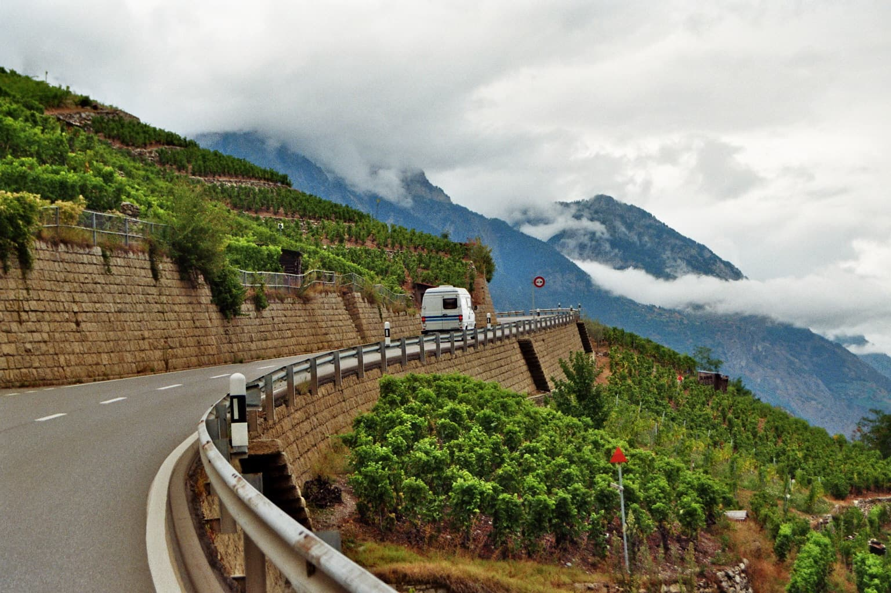
Nach ca. 750 km Anfahrt trennten uns nur noch wenige steile Serpentinen von unserem Ziel. Als wir den Pass über den Col de Forclaz überquerten, hieß uns der Mont Blanc, in dicke Wolken gehüllt, mit eiskalten Winden willkommen. Die Aussichten vom Campingplatz im Örtchen Argentière sahen auf der Website beeindruckend aus. Dafür mussten wir uns jedoch noch eine Weile gedulden.
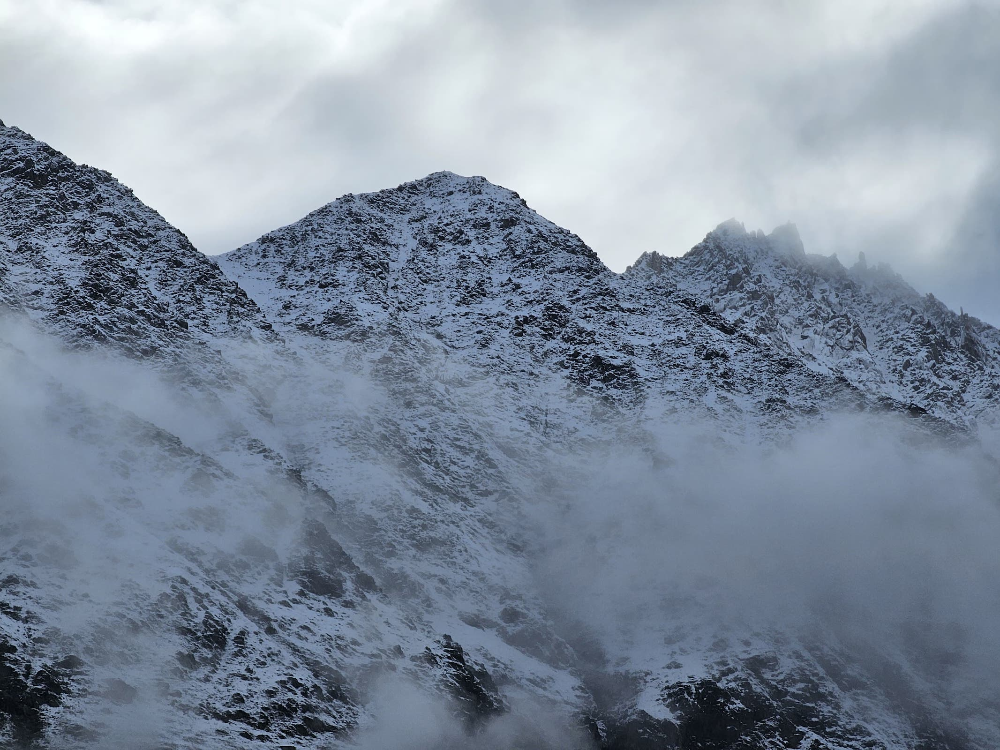
Zunächst folgten Dauerregen und weitere Abkühlung. Wir hätten uns in den heißen Tagen zuvor nicht erträumt, dass wir in der ersten Nacht schon Wärmflaschen und Leggings brauchen würden. Die mitgebrachte Winterkleidung war eigentlich nur für die Gondelfahrt zum auf 3842 m gelegenenen Gipfel Aiguille du Midi gedacht.
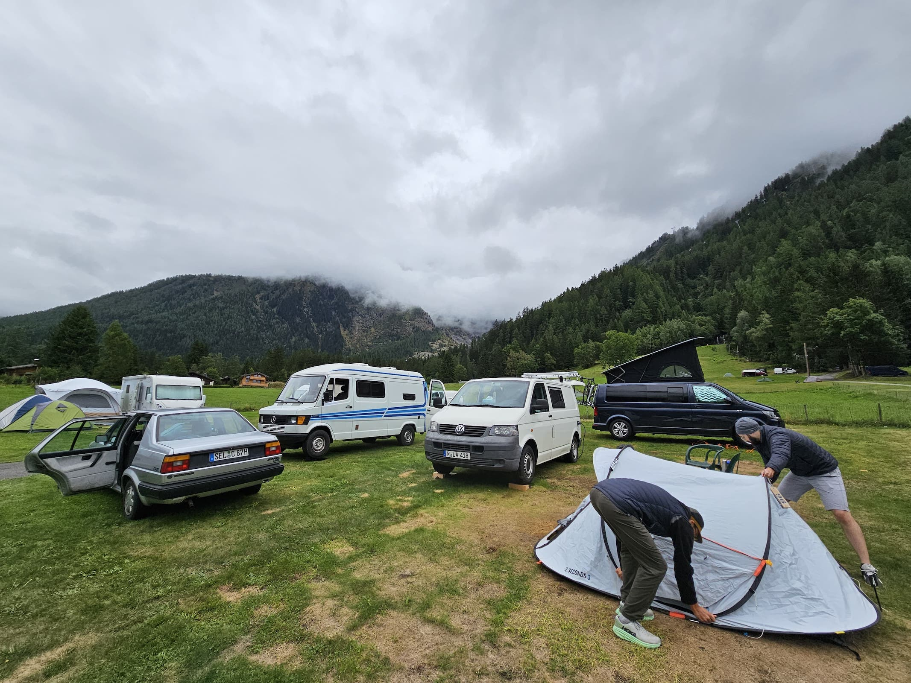
Ebenso überrascht müssen wohl die Teilnehmenden zu Beginn dieser Woche gewesen sein. Vor dem World Series Finale Ultra Trail du Mont Blanc starteten insgesamt sieben weitere Rennen rund um das Bergmassif mit jeweils ähnlichen Strecken, jedoch unterschiedlichen Distanzen und Schwierkeitsgraden. Am Montag begann das Rennen mit der längsten Distanz: PTL, 300 km, 25.000 hm. Die ersten Finisher dieses Laufs sollten erst am darauffolgenden Freitag im Ziel eintreffen. Wir verfolgten in Decken gehüllt im Livestream mit, wie diese Athleten ihren langen Weg unter schwierigsten Bedingungen antraten. Stellenweise lag sogar Schnee.
Da wir unsere geplanten Wandertouren aufgrund des Wetters vorerst vertagen mussten, begaben wir uns auf nach Chamonix zur Expo. Hunderte Aussteller aus dem Trailsport Bereich präsentierten Ausrüstung und Kostproben für Verpflegung. Täglich hielten verschiedene Spitzensportler Vorträge und Marken luden zum gemeinsamen Run, Hike und Meet & Greet ein.
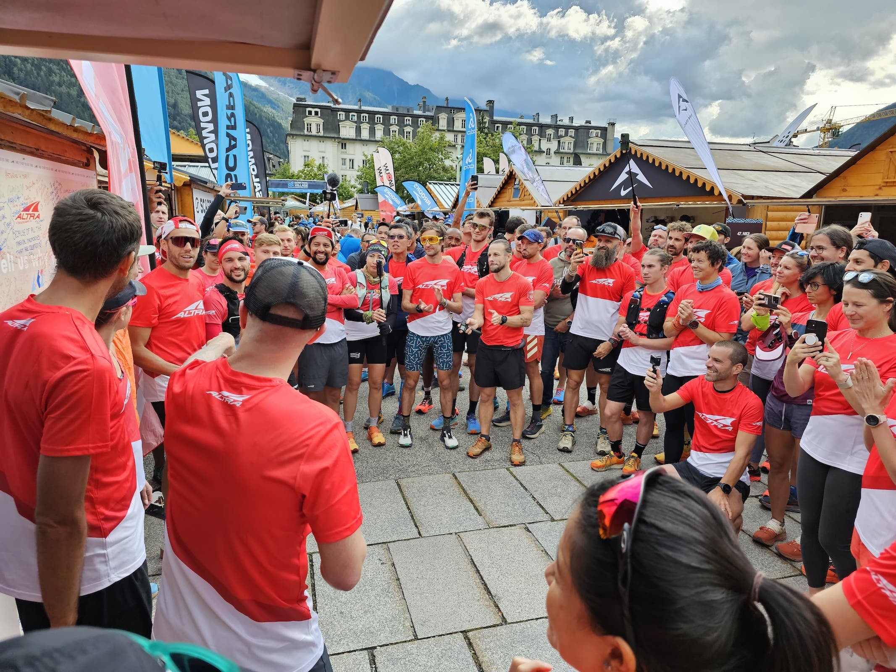
1042 Support Crew
Ein essenzieller Teil unserer Reise war natürlich auch die Unterstützung für Christian während dem Rennen. Dieser hatte sich monatelang akribisch auf das Event vorbereitet und einen ausführlichen Plan für sich und uns zurechtgelegt, womit er die enorme Strecke bewältigen wollte.
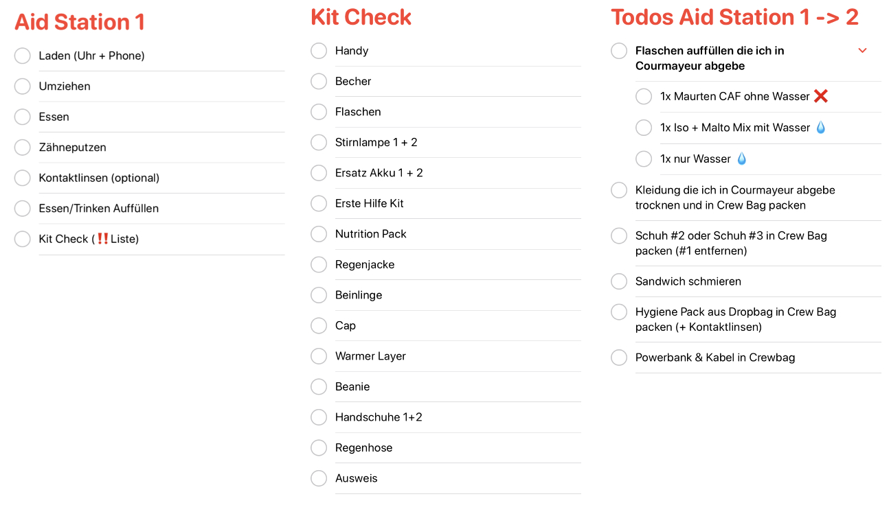
Wie bei jedem Lauf ab einer gewissen Länge gibt es beim UTMB verschiedene Aid-Stations, welche von den Crews der Teilnehmenden besucht werden dürfen. Die Regeln hierfür sind gerade bei ca. 2700 Startenden sehr streng, da es sonst zu einem großen Chaos bei der Anfahrt und in den Stationen selbst kommen würde. So durfte z.B. immer nur eine Person ca. 10 Minuten vor der erwarteten Ankunft der Teilnehmenden die Station mit einem Ticket betreten. Innerhalb der Stationen gab es auch Getränke, Essen, Physiotherapie und alles weitere, was man zum Überleben braucht. Jedoch dürfen nur die Teilnehmenden selbst zugreifen, die durch ihre Startnummer erkennbar sind.
Wir hatten alles Wichtige in einer Sporttasche verpackt, um schnell auf die Bedürfnisse von Christian reagieren zu können. Weitere Vorräte hatten wir als Backup im Auto dabei. Wie sich herausstellen sollte, war diese Vorbereitung essenziell. Nach letzten Handgriffen ging es für Christian und uns mit dem Shuttle Bus zum Start des Rennens in das Zentrum von Chamonix.
DNF nach 20 Metern
Start: Chamonix | Ortszeit: 18:00 Uhr
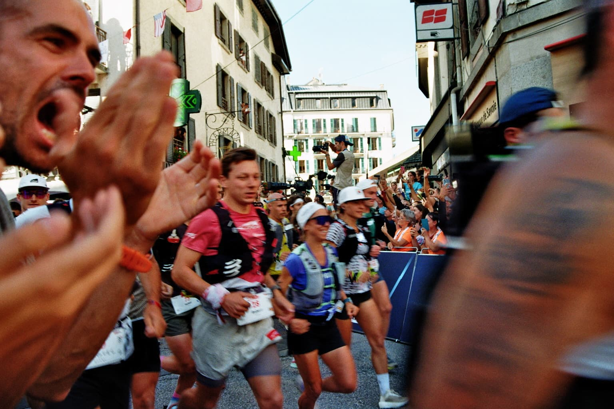
Wir bejubelten die tausenden Teilnehmenden zum Start des UTMB. Zum Glück hatte sich das Wetter zu perfekten Voraussetzungen zum Laufen entwickelt, sodass das Rennen in eine klare Vollmondnacht startete. Als wir wieder im Camp angekommen waren, trafen wir die letzten Vorbereitungen, um unser bestes als Support Crew geben zu können. Als Vehikel für diese Tour stand der voll bepackte und frisch geputzte ‘87er VW Jetta von Christian in den Startlöchern und wir versuchten noch ein paar Stündchen Schlaf abzubekommen, bevor wir ebenfalls die Runde um den Mont Blanc antraten.
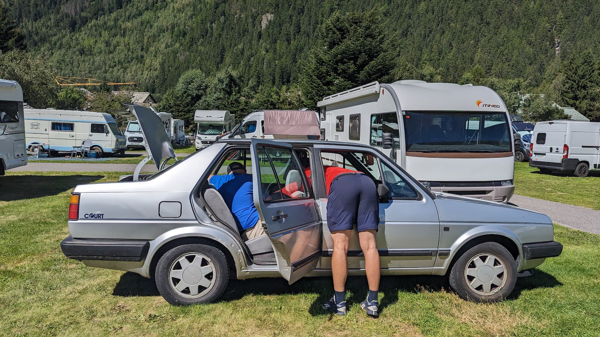
Um 01:30 Uhr Nachts starteten wir müde, aber voller Vorfreude, den Motor. Aber wenige Meter weiter mussten wir unsere Tour vermeindlich schon wieder beenden … Im Stress der Vorbereitung hatten wir vergessen, dass das Eingangstor zum Campingplatz bis 06:00 Uhr morgens abgesperrt bleibt. Jedoch fanden wir uns nun leider auf der falschen Seite wieder. Nach kurzer Überlegung, ob wir zum Vandalismus schreiten sollten, wählten wir schlechten Gewissens doch lieber die Notfallnummer der Betreiberinnen. Diese reagierten zu unserer Überraschung tatsächlich prompt. Das Tor durften wir zwar passieren, jedoch erst nach dem beschämendsten Anschiss, den wir seit langer Zeit erhalten hatten. Na ja, Hauptsache wir konnten unseren Auftrag erfüllen, auch wenn es kein Notfall war.
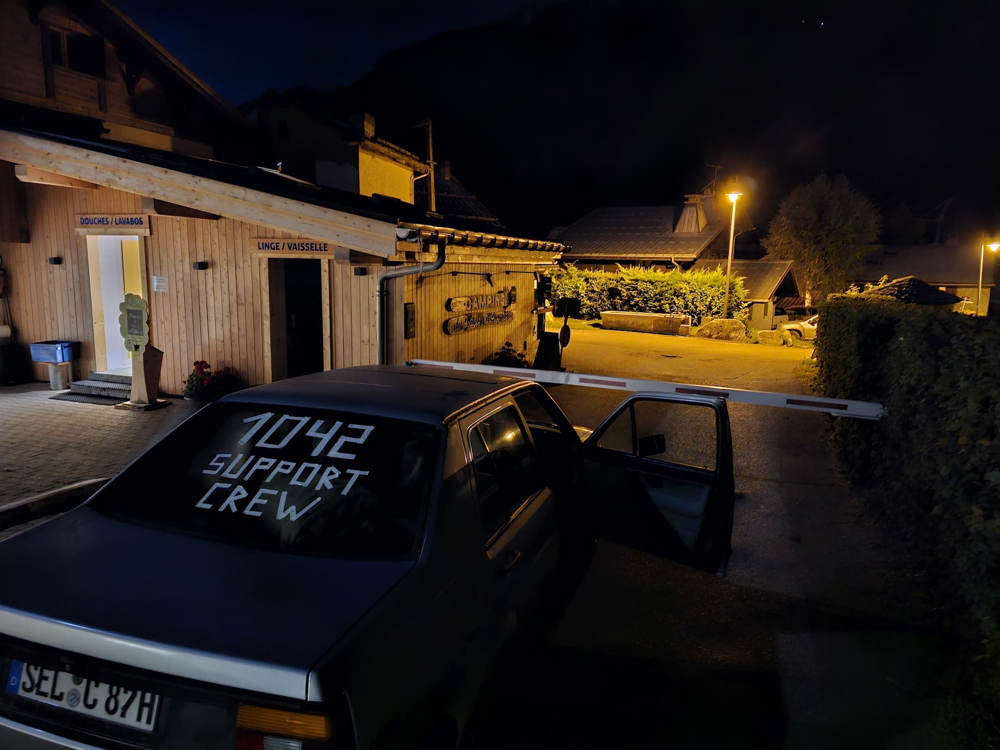
Unterwegs durch die Alpen
Aid-Station: Courmayeur | Zeit: 13 h 21 m | Distanz: 81,8 km
Die Anfahrt nach Courmayeur sollte durch den Mont Blanc Tunnel erfolgen. Jedoch war dieser aufgrund von Bauarbeiten nur einspurig befahrbar und der Nachbartunnel aufgrund eines Erdrutsches (dank des spitzenmäßigen Wetters) nicht passierbar. So hatten wir uns auf sehr lange Wartezeiten eingestellt, und lagen damit bedauerlicherweise auch richtig. Aber mit Kaffee und dem UTMB Livestream ließ sich die Zeit schnell überbrücken. An der Aid-Station angekommen, begannen wir mit den abgemachten Vorbereitungen: Kit-Check für die Versorgung und Zubereitung eines frischen Frühstücks-Sandwiches für Pechi. Unser Spirituskocher sollte auf der Kofferraumklappe noch nicht seinen ungewöhnlichsten Einsatzort für den Tag gefunden haben. Die Hälfte war für Christian bereits geschafft, und mit neuer Kraft begab er sich im Morgengrauen wieder auf die Strecke.
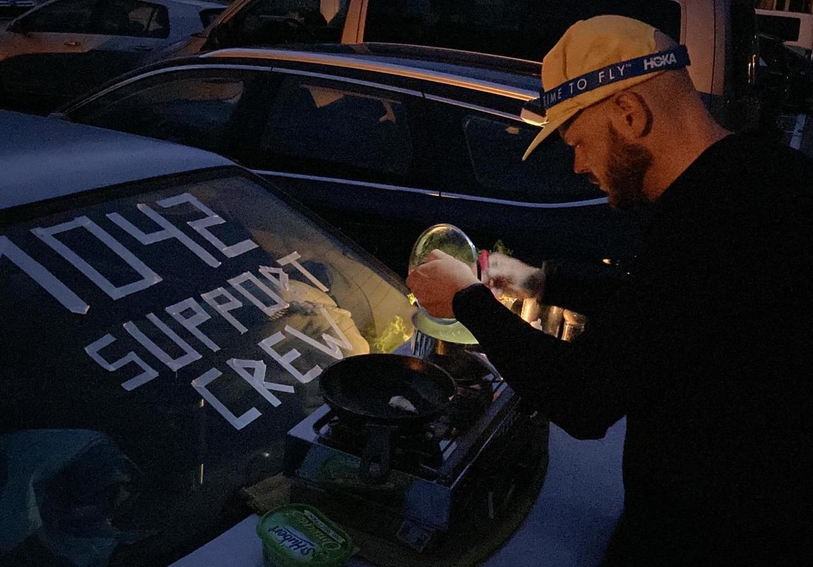
What running 100 miles does to a person
Aid-Station: Champex Lac | Zeit: 22 h 14 m | Distanz: 127,6 km
Für uns ging es nach der erfolgreichen Versorgung auch unmittelbar weiter in Richtung Schweiz. Das alpine Gelände lässt leider nur umständliche Straßenführungen zu, wodurch die Entfernungen zwischen den Aid-Stations mit dem Auto teilweise mehr als doppelt so weit sind als zu Fuß. Auf der ca. 2 Stunden langen Reise nach Champex Lac machten sich auch bei uns langsam erste Ermüdungserscheinungen breit. Eine direkte Anfahrt in den auf 1470 m hoch gelegenen Ort war aufgrund von Straßensperrungen nicht möglich. So mussten wir samt Versorgungs-Kit mit einem Linienbus die steile Auffahrt erledigen und gönnten uns zur Belohnung ein halbes Stündchen Schlaf am traumhaften Bergsee.
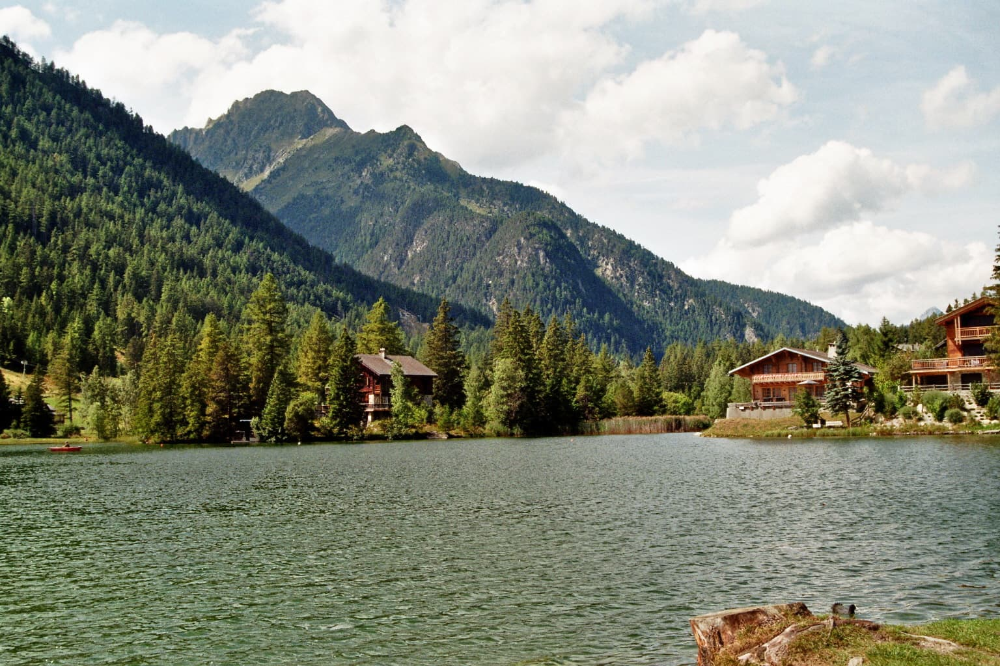
Es herrscht während der Rennwoche in der gesamten Gegend immer etwas absurde Stimmung. Das Leben steht natürlich nicht wegen des UTMB still, auch wenn die Strecken durch die Ortschaften führen. So kommt es, dass sich im Minutentakt verschwitzte, entkräftete und dreckige Extremsportler:innen ihren Weg durch volle Fußgängerzonen bahnen und gelegentlich Applaus ernten.
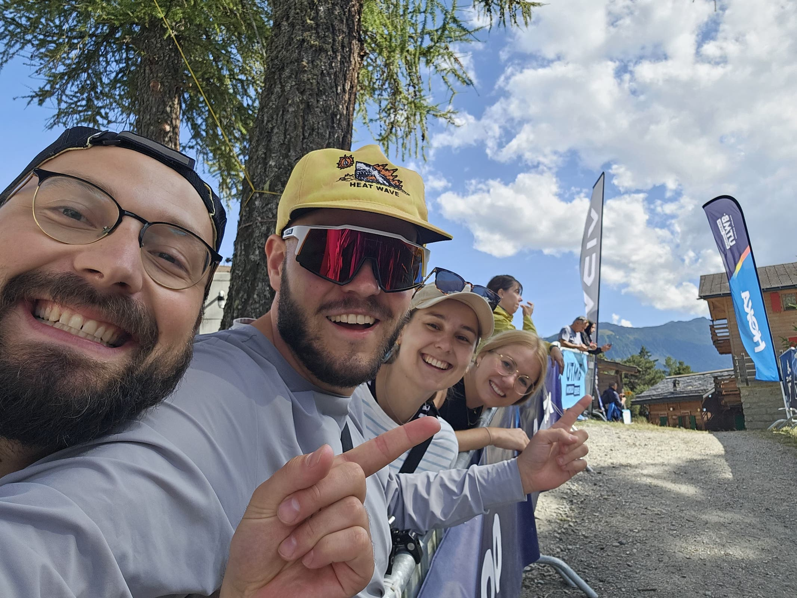
Das Eintreffen von Pechi rückte immer näher und wir verließen die Liegewiese, um ihn in der Station in Empfang zu nehmen. Nun lagen bereits 127 km hinter ihm, welche auch ihre Spuren hinterlassen hatten. Leicht desorientiert und sichtlich erschöpft traf er im vollen und entsprechend lauten Versorgungszelt ein. Nun war auch für ihn eine Ruhepause im separaten Schlafzelt angesagt, was uns Zeit gab, die notwendigen Schritte mit weniger Hektik durchzuführen.
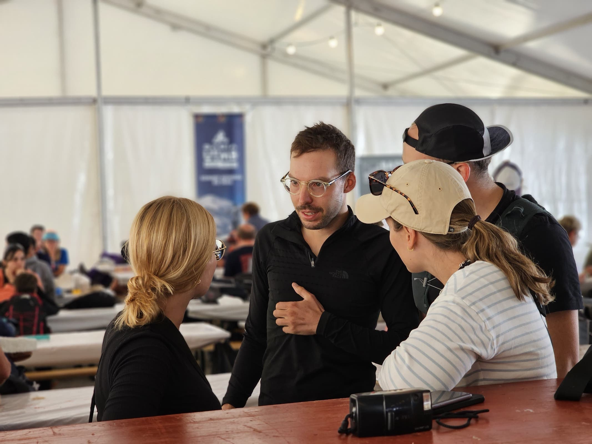
Nach seinem „Nickerchen“ mussten wir ihn zu etwas Nahrungsaufnahme überreden, damit sich die Erschöpfungssymptome legen konnten. Unser zweites Parkplatz-Sandwich traf leider diesmal nicht seinen Nerv, aber zum Glück gab es frische Pasta vor Ort. So vergingen statt den geplanten 30 Minuten Aufenthalt zwar fast ganze 90, aber diese konnten Christian wieder auf die Spur bringen, um den Run fortzusetzen.
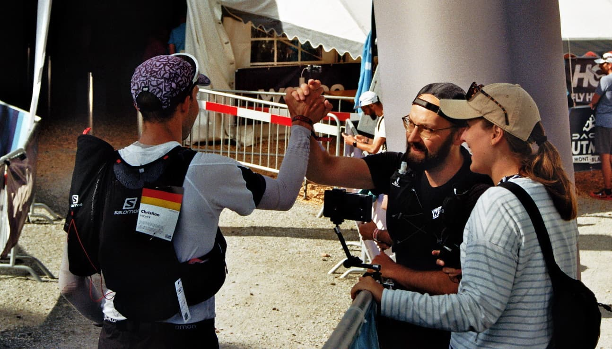
Ungeahnte Energiereserven
Aid-Station: Trient | Zeit: 26 h 34 m | Distanz: 143,8 km
Eine Busfahrt später saßen wir bereits wieder im Jetta, um den Loop rund um das Gebirge ebenfalls fortzusetzen. Zuvor legten wir noch einen kurzen Shopping-Stop ein, um ein Entschuldigungs-Geschenk für unsere Campingplatzwächterinnen zu besorgen. Zur nächsten Station nach Trient war es nicht weit. So mussten wir uns fast schon beeilen, damit wir Pechi nicht verpassen. Das Bordbistro zauberte noch schnell einen Kartoffelbrei auf dem Schotterparkplatz. Dieser sollte seinen Magen etwas beruhigen, welcher von Energy-Gels und Elektrolyt-Drink bereits strapaziert war. Die zweite Nacht brach bereits über uns herein und die Trails entlang der Berge erstrahlten im Licht der Stirnlampen.
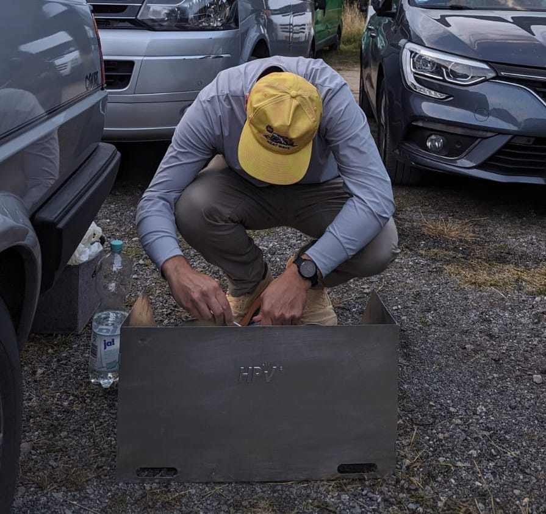
In der Aid-Station war es diesmal noch voller und enger als zuvor. Die Athleten waren sichtlich ausgelaugt und die Zahl der DNF (Did Not Finish) erhöhte sich mit jeder Stunde. Doch Pechi überraschte uns mit seiner Energie beim Einlauf. Scheinbar hatte sich die längere Pause in Champex-Lac wirklich bezahlt gemacht und er war nun deutlich fitter als wir ihn verabschiedeten; schon beeindruckend nach weiteren knapp 17 km. So war sein Aufenthalt hier auch nur kurz und er machte sich direkt wieder auf den Weg. Sein ursprünglicher Zeitplan lag bei ca. 30 h für die gesamte Strecke. Inzwischen war das nicht mehr zu schaffen, aber zu Ende bringen wollte er es auf jeden Fall.
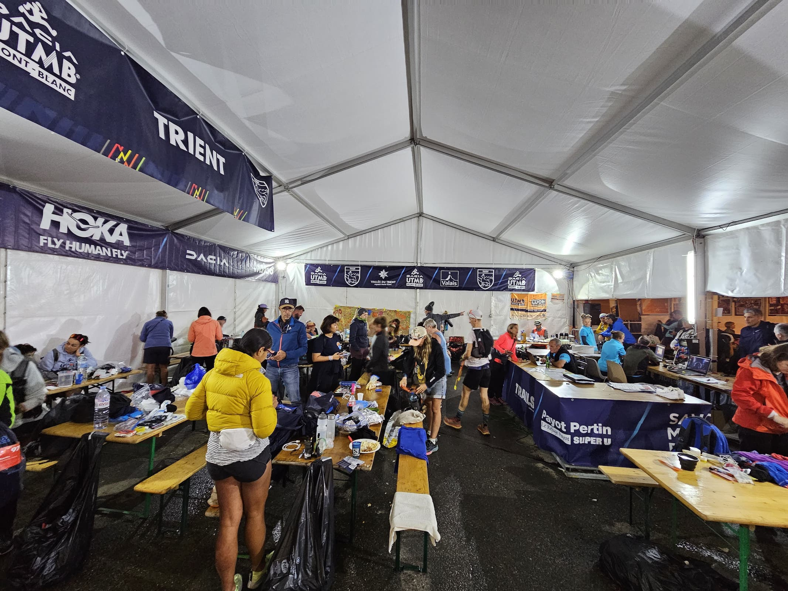
Frittierte Sonnenstrahlen
Aid-Station: Vallorcine | Zeit: 29 h 40 m | Distanz: 154,4 km
Die Abstände zwischen den Stationen wurden deutlich kürzer, und somit auch unsere Fahrstrecken. Zum Glück, denn langsam hatten auch wir unsere Kapazitätsgrenzen erreicht. Die erwartete Ankunftszeit von Pechi für den nächsten Stop in Vallorcine verzögerte sich etwas. Wir kamen rechtzeitig dort an, um sogar fast eine Stunde im Auto das ein oder andere Auge zuzumachen.
Nach dieser unruhigen, aber willkommenen Pause, betraten wir das Gelände der Aid-Station. Hier war lustigerweise auf den ersten Blick vom Lauf-Event, außer den großen, beleuchteten UTMB Bannern, wenig zu spüren. Es war eine regelrechte Party-Stimmung vor dem Versorgungszelt. Es gab Pommes-Frites und Glühwein. Für uns auch ein willkommener Mitternachtssnack. Zu diesem Zeitpunkt hatten wir eigentlich gehofft schon den Zieleinlauf zu feiern, aber davon waren wir leider noch einige Stunden entfernt. Als wir Pechi auf der Strecke erspähten und nochmal kräftig anfeuerten, machte er sich ohne zu zögern über unsere Kartoffelstäbchen her. Wenn es das war, was er brauchte, um die letzten Kilometer gar zu bewältigen, sollte es ihm vergönnt sein.
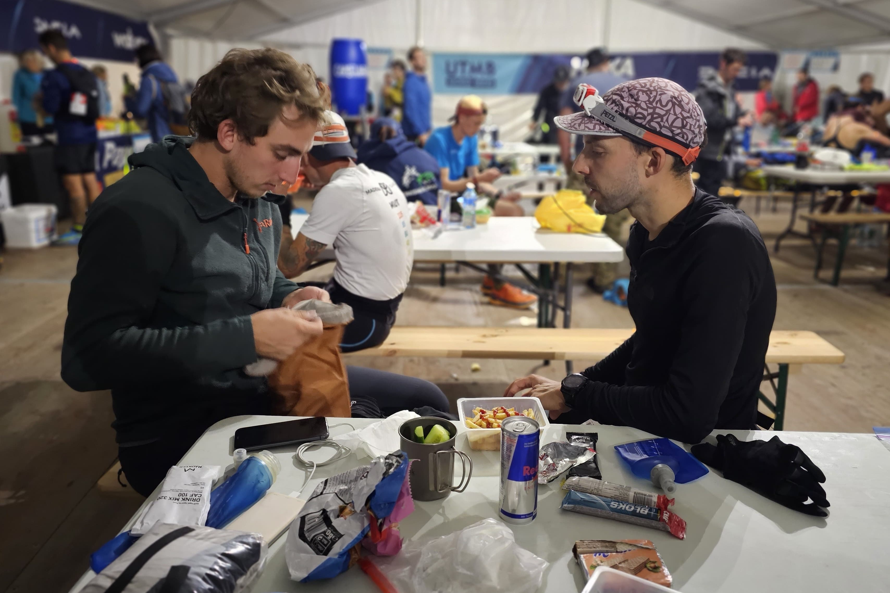
Worth it
Ziel: Chamonix | Zeit: 34 h 05 m | Distanz: 173,2 km
Nun wussten wir, dass er noch knapp 18 km und 1000 hm überstehen musste. Wir begaben uns mit einem kurzen Zwischenstopp am Campingplatz in Richtung Chamonix zum Ziel. Obwohl unsere Betten schon kurzzeitig so nah waren, harrten wir die letzten Momente in einer Parkbucht im Auto aus. Die sonst so überfüllte Innenstadt von Chamonix war fast leer und dunkel. Jedoch befanden sich im hell erleuchteten Zielbereich zahlreiche Unterstützende. Diese hatten wohl alle eine ähnliche (Tor)Tour du Mont Blanc hinter sich, um ihre Held:innen jubelnd in Empfang zu nehmen.
Auch für Pechi und uns wurde dieser lang ersehnte Moment endlich Wirklichkeit und er kam mit letzter Kraft ins Ziel gerannt. Die ersten Worte des diesjährigen Siegers Jim Walmsley lauteten im Ziel: “I feel terrible”. Christian’s Version dieser Aussage war in etwa: “Oh Gott, oh Gott, oh Gott, oh Gott, oh Gott, oh Gott…”.
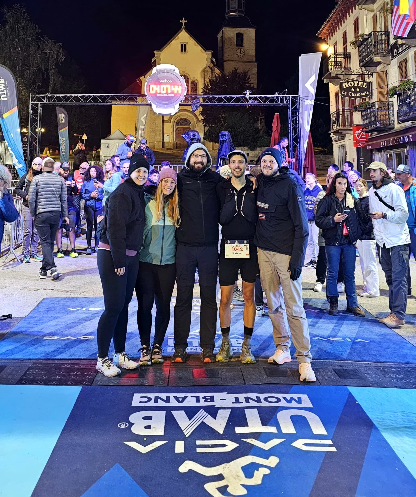
Wir sind enorm stolz auf seine Leistung und freuen uns mit ihm, dass dieses Abenteuer erfolgreich zu Ende gehen konnte. Sowohl Christian als auch wir haben eine Menge dazu lernen können, was es bedeutet einen Ultra-Marathon dieses Kalibers zu bezwingen.
Eigentlich wäre es ja verschwendete Energie, wenn man es dabei belassen würde, denn mit diesen Erfahrungen kann man sicher noch etwas mehr rausholen. Wir werden sehen, was die Zukunft bringt. Vielleicht auch eine neue Bestzeit im Fichtelgebirge?